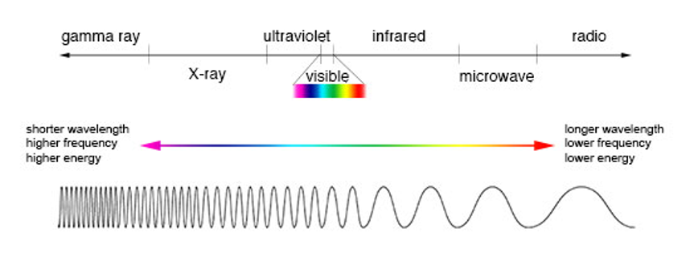
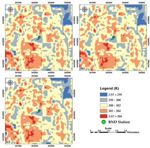
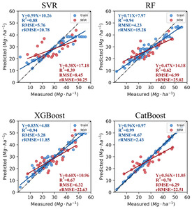

Chapter 4 Policy
City introduction
Shanghai
Shanghai, is one of the four direct-administered municipalities of the People’s Republic of China (PRC). The city is located on the southern estuary of the Yangtze River, with the Huangpu River flowing through it. The population of the city proper is the third most populous in the world, with 24.89 million inhabitants in 2021, while the urban area is the most populous in China with 39,300,000 residents. As of 2018, the Greater Shanghai metropolitan area was estimated to produce a gross metropolitan product (nominal) of nearly 9.1 trillion RMB ($1.33 trillion). Shanghai is one of the world’s major centers for finance, business and economics, research, science and technology, manufacturing, transportation, tourism, and culture, and the Port of Shanghai is the world’s busiest container port.
Source: wikipediaShanghai
summary of the policy
Globao policy
- C40 is a network of mayors of nearly 100 world-leading cities collaborating to deliver the urgent action needed right now to confront the climate crisis. Together, we can create a future where everyone, everywhere can thrive.
- 1.5°C Climate Action Plans C40’s Climate Action Planning programme supports cities around the world to create and implement climate action plans in line with the 1.5°C target of the Paris Agreement.
- High-Impact Accelerators C40 Accelerators demonstrate the highest-level of mayoral leadership on urgent climate action. They are based on the most ambitious, science-based targets and lay out concrete delivery milestones, both for mitigation and adaptation.
- Inclusive & Thriving Cities n the midst of climate breakdown, mayors are facing multiple interlinked crises, including the COVID-19 pandemic and persisting social injustices. A Global Green New Deal with inclusive climate action at its heart is needed to build thriving communities that work for everyone.
Local policy
- Connecting Delta Cities Network By 2050, the majority of the world’s population will live in cities in or near deltas, estuaries or coastal zones. This trend will increase the risk of extreme climate change related events, and the vulnerability of delta cities is expected to increase in the decades to come.The Connecting Delta Cities Network, led by the City of Rotterdam, brings together delta cities to address sea-level rise, discuss coastal flooding and water management issues and exchange knowledge and best practice to support cities in implementing solutions.
- Private Building Efficiency Network Energy consumed in buildings accounts for almost half of C40 cities’ carbon emissions on average, and around two-thirds of this comes from private buildings. Buildings can last over 100 years, which means that increasing a building’s energy efficiency is critical to meeting global climate goals. Improving building energy efficiency can bring many other additional benefits such as reduced energy bills, healthier workplaces, new jobs and greater energy security.Cities participating in the network have prioritized four focus areas around which they are actively sharing policies, strategies, ideas and challenges with one another.
- Continuously promoting the response to climate change and promoting synergy in reducing pollution and carbon emissions Deepening the construction of the local carbon market and strengthening the management of third-party verification agencies, Shanghai’s carbon-emitting enterprises completed 100% compliance for the eighth consecutive year. Actively promoting the creation of low-carbon demonstrations during the 14th Five-Year Plan period, issuing the “Shanghai Low Carbon Demonstration Creation Work Plan”, and innovating the construction of near-zero carbon emission practice zones and communities. We explored the fine-grained management of greenhouse gases and launched pilot district-level greenhouse gas inventories in Changning District and Jinshan District.
RS contribution
RS data
Landsat 5
Since 1984, Landsat 5 has gathered more than 700,000 images and observed climate change, agricultural practices, development and urbanization of cities, ecosystem evolution, and increasing demand for natural resources.The Landsat Thematic Mapper (TM) sensor was carried on Landsat 4 and Landsat 5, and created images consisting of six spectral bands with a spatial resolution of 30 meters for Bands 1-5 and 7, and one thermal band (Band 6).Landsat8
The remote sensing equipment installed on LCDM includes a multichannel scanning radiometer OLI (Operational Land Imager) and a two-channel – IR radiometer TIRS (Thermal Infrared Sensor). The OLI instrument, developed by Ball Aerospace & Technologies, operates at nine wavelengths in the range of 0.433-2.300 μm and provides images with a maximum resolution of 15 m using advanced space imagery technologies. For their development, the experimental EO-1 satellite (launched in 2000 and equipped with the Advanced Land Imager radiometer, a prototype of the OLI radiometer) was used.
The spatial landsat 8 resolution of the images obtained with the TIRS instrument is 100 m. Its main purpose is to obtain surface temperature characteristics, and to study the process of heat and moisture transfer in the interests of the agricultural sector, water management, etc.Synthetic Aperture Radar
Synthetic aperture radar is a way of creating an image using radio waves. The radio waves used in SAR typically range from approximately 3 cm up to a few meters in wavelength, which is much longer than the wavelength of visible light, used in making optical images. These wavelengths fall within the microwave part of the spectrum in the figure below.
Comparison of wavelength, frequency, and energy for the electromagnetic spectrum. Source: NASA’s Imagine the Universe
How it works
The impact of carbon emissions on the environment is particularly prominent in the global climate crisis. Shanghai has also launched a series of policies and projects to address this phenomenon. Remote sensing technology can be used to monitor carbon emissions, for example by indirectly using temperature to reflect changes in carbon emissions.- Landsat 5 TM and Landsat 7 ETM+ have six reflective bands (visible, near-infrared, and short-wavelength infrared, 30-m spatial resolution) and one band in the TIR region (Band 6). The thermal band has a native spatial resolution of 120-m and 60-m for TM and ETM+, respectively, but it is delivered by USGS at 30-m after cubic convolution resampling. The Landsat 8 OLI sensor has nine reflective bands with 30-m spatial resolution, and Landsat 8 TIRS sensor has two bands in the TIR region (Band 10 and Band 11). These thermal bands have a 100-m native spatial resolution but resampled and published at 30 m by USGS.(Sekertekin and Bonafoni, 2020)

In addition to surface temperature results to reflect carbon emissions, projects in Shanghai have trie remotely sensing technology too get aboveground carbon storage.(Li, 2023) They used single Landsat 8 (L) remote sensing data, single Sentinel-2 (S) remote sensing data and combined Landsat 8 and Sentinel-2 (L+S) data as data sources. Four machine learning methods, Support Vector Regression (SVR), Random Forest (RF), XGBoost (extreme gradient boosting) and CatBoost (classification boosting), were used to predict the forest AGC based on the two forest sample sites in Shanghai.

Accuracy evaluation of AGC prediction based on Landsat 8 and Sentinel-2 (L + S) using four machine learning models. Reflection